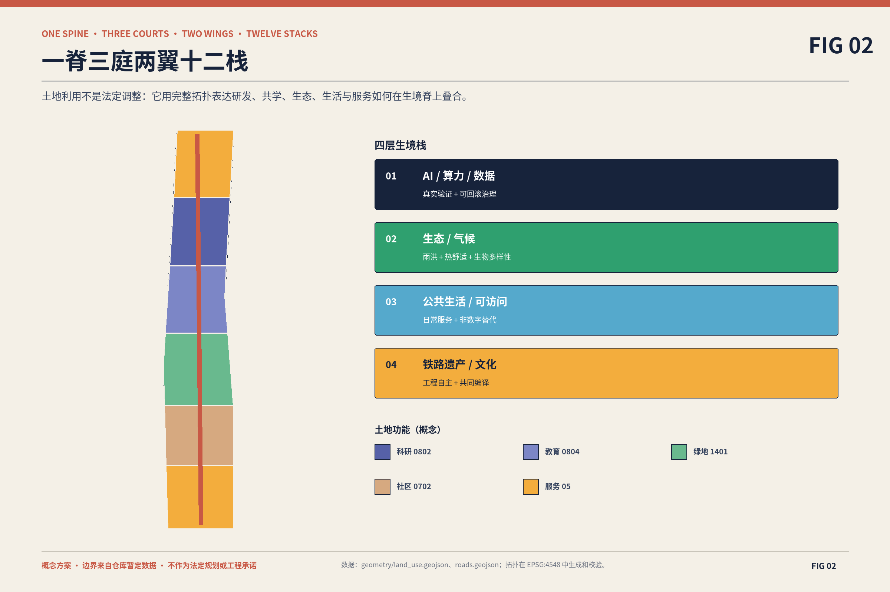
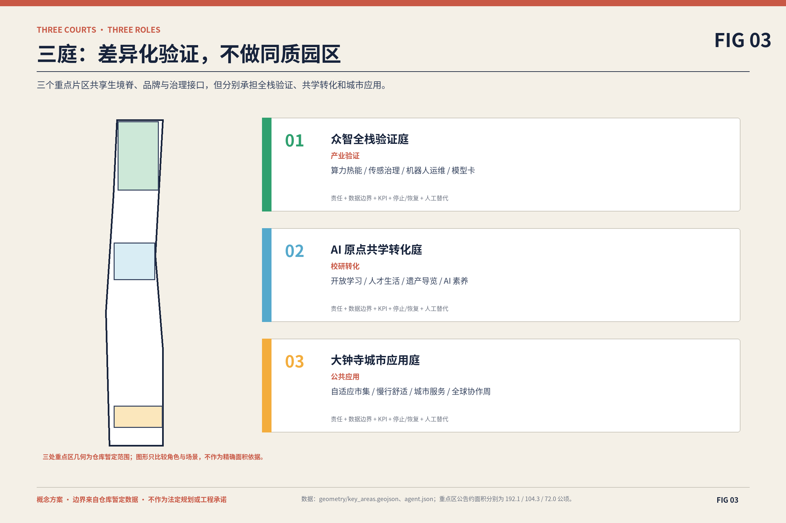
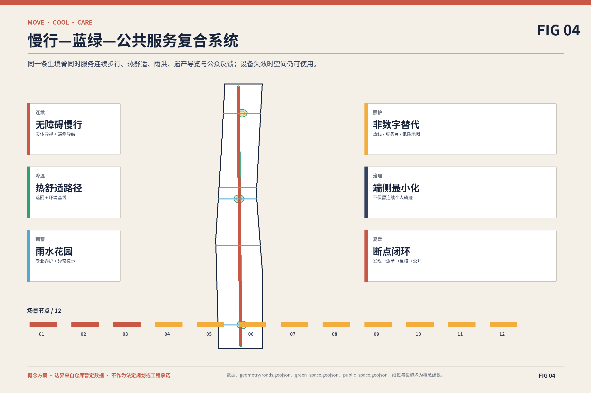
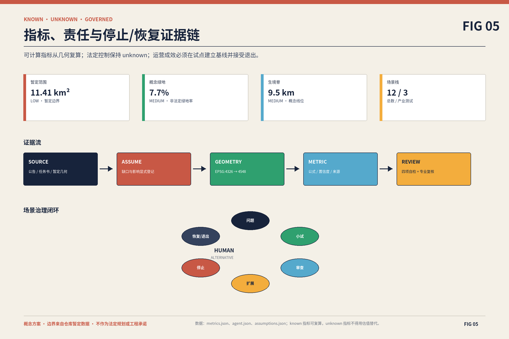
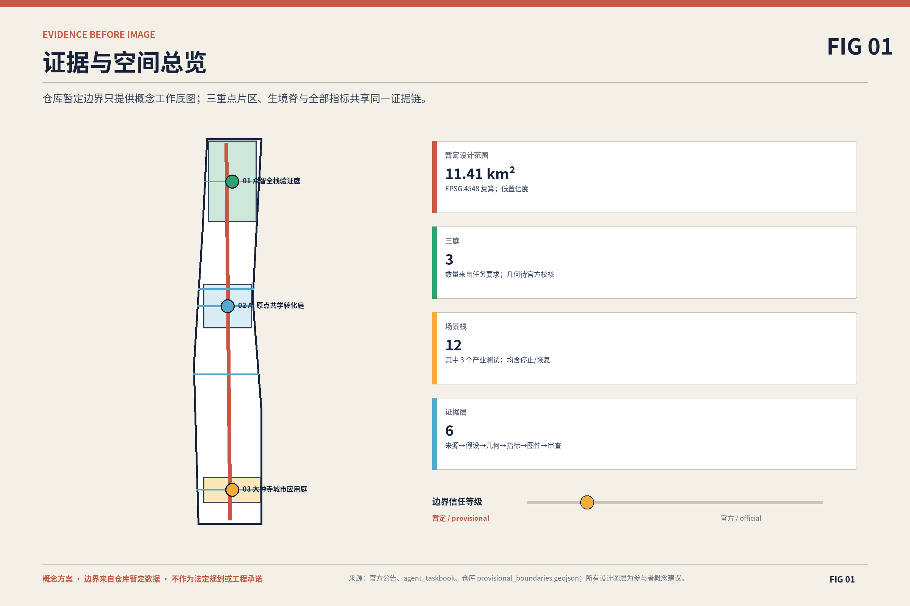

众智全栈验证庭
面向端侧算力、环境传感、机器人与可信治理。
- 气候花园
- 模块化测试场
- 开放观察廊
- 3 个产业测试
把算力、数据、人才与产业测试，叠合进铁路遗产、蓝绿生态、公共服务和日常生活。不是给城市贴上 AI 标签，而是让智能真正长进城市。
概念方案 · 边界来自仓库暂定数据 · 不作为法定规划或工程承诺
一条生境脊串联三处重点片区与两条服务翼；12 个场景以可停止、可恢复、有人工作为统一合同。用地分区与几何均为概念建议。

重点区域共享品牌、数据治理、无障碍标准和年度路线，但不做同质园区。
面向端侧算力、环境传感、机器人与可信治理。
面向高校开放、人才培养、创业转化与公众 AI 素养。
面向智能体、终端、轨道换乘和包容性日常服务。

点击或键盘展开每一栈，查看 AI 能力、数据、责任、KPI、停止、恢复与人工替代。前三项为产业测试。
服务对象企业工程师 / 园区运维 / 科研人员
AI 能力设备级负荷预测、热环境异常识别与人工可覆盖的调度建议
数据边界只采设备与环境数据；不采人脸、身份轨迹或个人生产绩效
责任园区设施业主；专业能源顾问复核
KPI试点前后单位服务量能耗、热舒适投诉和人工接管次数
停止异常建议连续出现、能耗高于人工基线或安全联锁触发
恢复专业复核、回滚到人工策略并完成小范围复测
人工替代沿用人工值守与既有楼宇控制策略
服务对象模型团队 / 城市运维 / 公众监督员
AI 能力传感漂移识别、模型卡生成和数据最小化检查
数据边界仅处理空气、热、水、能耗等非个人环境数据；原始数据分级留存
责任场景治理委员会；第三方数据与安全审查
KPI模型卡完整率、漂移发现时长、公众异议闭环率
停止用途越界、无法解释的数据来源或审计日志中断
恢复冻结模型版本、完成数据清退与独立复核后再申请启用
人工替代公开静态监测报表和人工抽检
服务对象机器人企业 / 保洁园林团队 / 居民与访客
AI 能力低速巡检、清扫与园林状态识别
数据边界端侧避障；不保存可识别影像；只输出匿名事件统计
责任场地运营方；安全员现场接管
KPI人工接管频率、近失事件、任务完成率和公众舒适度
停止发生碰撞、侵入禁行区或端侧隐私策略失效
恢复封闭测试复现、风险评估和限定时段复启
人工替代保留人工巡检、清扫与报修渠道
服务对象老人及残障访客 / 照护者 / 通勤者
AI 能力结合坡度、遮阴、拥挤和设施状态推荐多种路径
数据边界默认无账号；位置在端侧处理；不用于画像或商业推送
责任公共空间运维方；无障碍顾问共审
KPI无障碍断点闭环率、路径可达性抽检和用户自报负担
停止设施状态过期、路线绕行不可接受或安全信息不确定
恢复人工巡检更新后恢复推荐并标注数据时间
人工替代连续实体导视、热线与现场服务台
服务对象园林运维 / 社区志愿者 / 学生
AI 能力土壤与积水异常提示、养护工单排序
数据边界只采生态与设备数据，不采个人活动轨迹
责任园林运维单位；水务与生态专业人员复核
KPI积水响应时间、植物存活记录和人工复核准确率
停止传感器失准、极端天气或建议与专业判断冲突
恢复人工巡检校准并重建季节基线
人工替代按季节养护表和现场巡查执行
服务对象周边居民 / 青少年 / 国际访客
AI 能力多语种、简明版、音频与手语友好的分层叙事
数据边界无需身份；内容纠错公开；不生成未经核验的历史事实
责任文化策展团队；铁路史与文保专家终审
KPI可访问格式覆盖、纠错响应时间和复访意愿
停止历史事实来源不明、文化表达争议或无障碍版本缺失
恢复下线争议内容，经专家与社区复核后发布新版本
人工替代固定展签、人工讲解与纸质无障碍地图
服务对象科研人员 / 创业团队 / 家庭照护者
AI 能力汇总公开服务与通勤信息，给出可解释的多条件比较
数据边界不做资格裁决；敏感需求仅本地保存；不向房源方出售画像
责任人才服务机构；人工顾问复核
KPI信息更新时效、人工转介完成率和被纠正建议比例
停止出现歧视性排序、过期信息或未经授权的数据调用
恢复清除问题规则并完成人工公平性抽检
人工替代实体服务前台与公开信息目录
服务对象学生 / 科研人员 / 创业团队 / 居民
AI 能力课程、实验室开放时段、挑战题与技术转移资源匹配
数据边界不读取未公开研究数据；推荐原因可见；申请由人审核
责任高校与转化机构联合运营
KPI跨机构活动数、公开成果转介和社区参与结构
停止知识产权边界不清、推荐偏向单一机构或申请过程不可解释
恢复人工分流、补充公开规则并完成利益冲突审查
人工替代开放日、导师门诊与纸面资源手册
服务对象通勤者 / 骑行者 / 公共交通运营者
AI 能力按天气、施工、拥挤和无障碍状态发布组合出行提示
数据边界使用汇总客流与公开事件；不保留个人连续轨迹
责任交通协调组；运营者人工确认重大提示
KPI换乘断点闭环、提示准确性和慢行路径连续性抽检
停止客流异常无法解释、提示与现场管制冲突或数据延迟
恢复切换到官方静态公告并核验数据源
人工替代现场引导、固定导视与官方交通公告
服务对象周边居民 / 小微经营者 / 老人及残障访客
AI 能力根据公开活动、天气与场地容量建议摊位和服务配置
数据边界不以消费能力、年龄或残障状态做差别定价与准入
责任市集运营方；社区代表参与排期审查
KPI无障碍摊位覆盖、投诉闭环和小微经营者参与结构
停止出现歧视性分配、拥挤安全风险或人工申诉失效
恢复回到公开轮换规则并完成人工重新排期
人工替代公开抽签、现场服务台和电话预约
服务对象居民 / 青少年 / 场景运营者
AI 能力把模型用途、限制、数据边界、负责人和申诉入口转为可读说明
数据边界只展示经发布审核的信息；公众反馈匿名汇总
责任场景治理委员会；教育与伦理顾问共审
KPI模型卡覆盖率、理解度抽测和申诉响应时间
停止模型卡与实际版本不一致或责任人不可联系
恢复暂停场景展示与服务，完成版本同步后复启
人工替代人工咨询、纸质说明与公开听证
服务对象全球访客 / 开发者 / 居民 / 企业与高校
AI 能力开放议题归类、无障碍日程、多语种摘要和场景版本展示
数据边界公开议题默认匿名；不以参会行为建立商业画像
责任年度活动秘书处；社区与专业委员会共审
KPI跨机构协作、社区参与结构、开放成果复用和次年问题闭环
停止赞助影响评审独立性、内容版权不清或活动安全条件不足
恢复披露利益关系、下线问题内容并通过活动安全复核
人工替代线下议事会、纸质议程和人工同传支持

科研、创业、工程、居民、学生、老人及残障访客、国际合作访客都拥有完整旅程与非数字替代。
开放课题—跨机构实验—公开成果—转化回访
找到可验证场景且知识产权边界清晰城市前台—沙盒申请—小试—审查—扩展或退出
低成本获得真实反馈而不牺牲公众权益需求匹配—设施接入—安全验证—运维交接
测试结果可复算、责任可交接日常到达—公共服务—反馈—查看闭环
无需懂 AI 也能使用并拒绝算法路径遗产导览—AI 素养—开放学习—项目展示
从参观者转为贡献者且得到明确署名行前选择—无障碍到达—现场支持—障碍上报
始终存在非数字替代路径多语种入口—年度路线—案例交流—开放成果复用
理解本地边界并建立长期合作更新项目按证据门槛进入下一阶段，每期都有扩展、暂停和退出三种结果；时间是相对顺序，不是政府工期。
官方数据核验、共识地图、三项低风险快启场景和基线监测
门槛 · 边界、权属、责任主体与数据影响评估完成三类产业测试、一期公共空间与模型卡驿站
门槛 · 安全、可访问性、公众接受度和运维成本通过阶段评估跨片区生境脊、场景复制、人才服务和国际合作
门槛 · 试点证据支持复制且专业规划条件明确年度审计、扩展/暂停/退出与 Living Stack Week 长期运营
门槛 · 公共价值、生态效益和治理能力持续达标核心指标来自同一组 GeoJSON；法定控制仍为 unknown。任务覆盖与自检状态由机器文件管理，视觉页面不替代它们。
公告 1.3 / 1.4 / 1.5 与 agent.1–agent.6 已进入 compliance matrix；deterministic、spatial、visual、professional 四项自检必须同时通过。
来源包括公告、任务书、仓库资料登记、暂定边界和六个一手机构案例。假设明确记录 official boundary、控规、道路红线、权属、市政、消防、防洪与文保缺口。
来源 → 假设 → GeoJSON → metrics → 图件 → 审查
